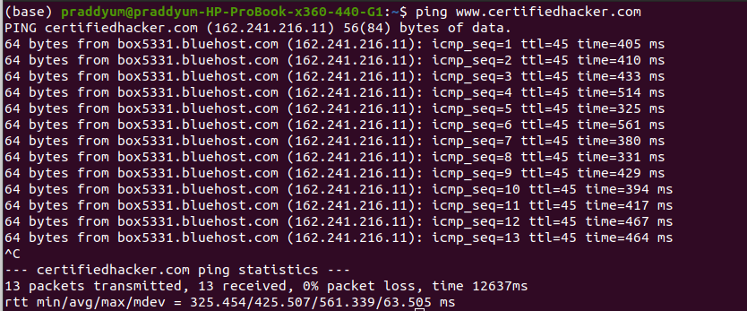

ping

So now let say we want to see whats the max size of data packet which could be sent without fragmenting.
So in widows cmd we'll write
ping
www.certifiedhacker.com -f -l 1473
-f : To not fragment the packets
-l : to define the size of packet
Note: 1473 was found after bruteforcing
So a packet with size of 1473 will go without fragmenting.